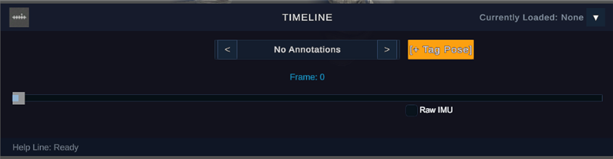
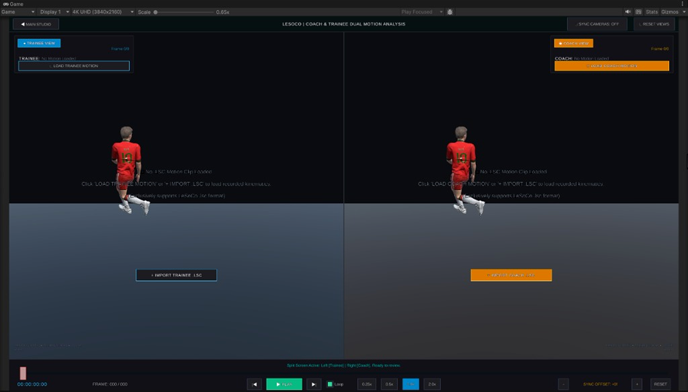
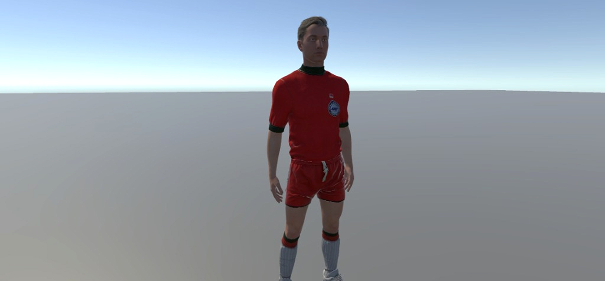

LeSoCo's biggest update yet.
Work in Progress. Come back in a few months to see LeSoCo version 1.3. Engineered from the ground up for Sony Mocopi and multi-IMU sensor rigs, LeSoCo combines breakthrough 3D kinematics playback with real-time biomechanical analysis and tactile coaching controls.


Tactile Jog-Shuttle. Experience broadcast-caliber scrubbing across dual Coach and Trainee streams from -5x rewind up to 5x fast-forward with zero latency.

Biomechanical Analytics. Real-time angular comparison tracks shoulder alignment and arm elevation with sub-degree accuracy alongside automated posture evaluation.

Instant Annotation. Freeze keyframes with a single keystroke, append diagnostic suffixes, and save coach commentary directly to the motion stream.

Timeline & Raw IMU. Frame-by-frame scrubbing with keyframe bookmarking and direct access to uncompressed 9-axis sensor telemetry.

Upcoming: Split-Screen Review. Our upcoming 50/50 dual review mode pairs trainee motions against coach benchmarks with locked 3D camera orbiting and temporal offset calibration.

Photorealistic Humanoid Rigs. High-fidelity athletic character models with realistic ambient illumination for intuitive rotational joint perception.
Living Roadmap. Track feature releases from Version 1.3 into real-time multi-IMU synchronization, AI posture diagnostics, and collaborative review on Monograph.